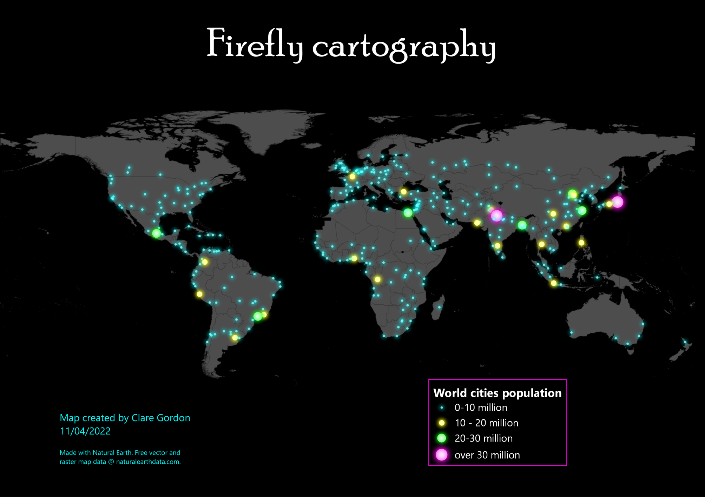

April 2022

Points glowing against a dark background.
Project > Properties > General > Background color.Select by expression where POP_MAX > 700000Graduated styling with 4 classes.Simple Marker. Set size, Fill colour = White; Stroke = no pen.Draw Effects and click on Star button.Source and set Opacity, e.g. to 70Outer glow
Spread = 1Blur radius = 1Repeat for each class, choosing graduated sizes, and different bright colours.